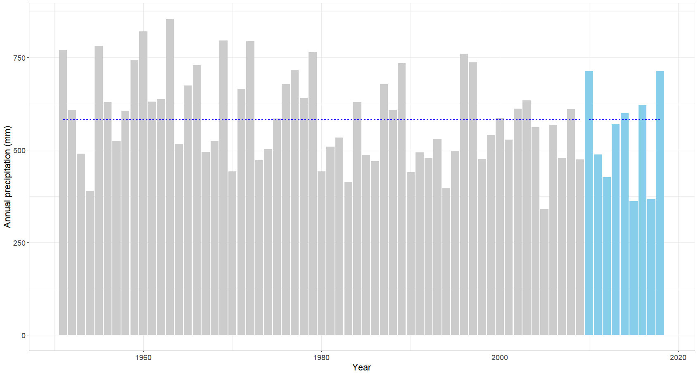
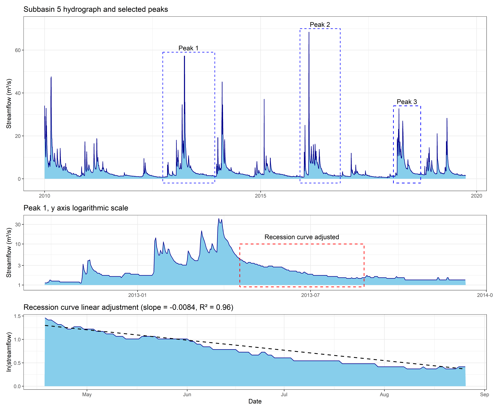
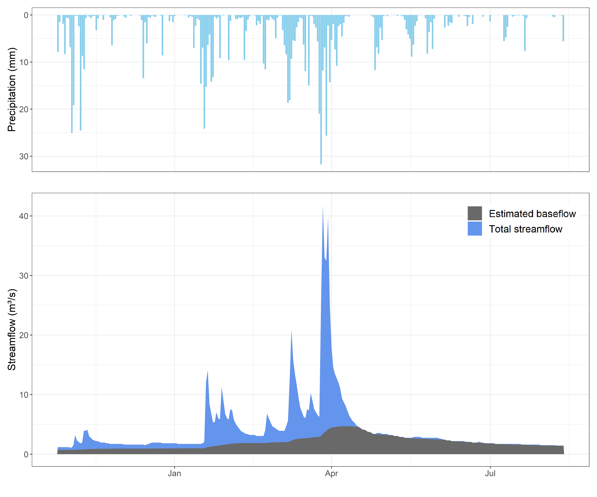
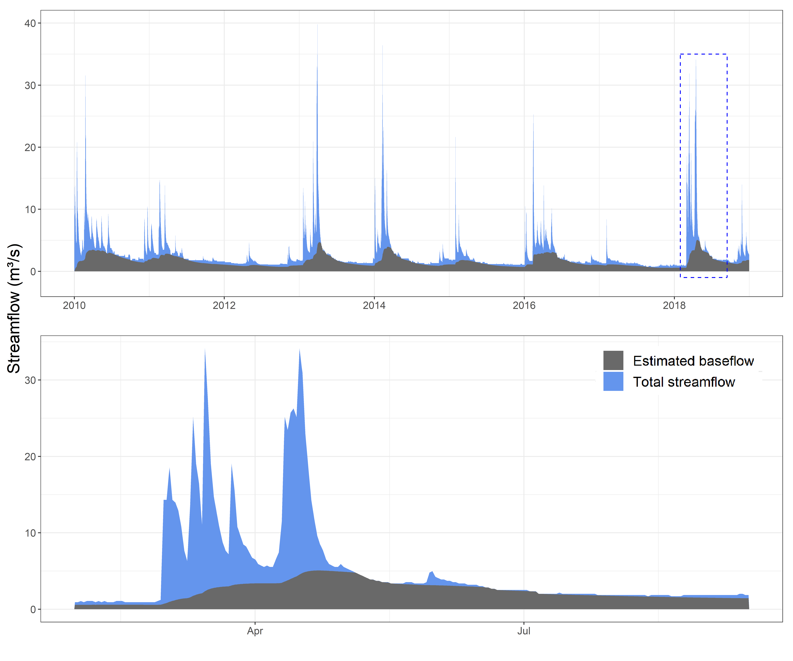

Soft data collection for realistic hydrological modelling: a reproducible methodology developed in R for the Tagus River basin.
Abstract
Models in hydrology have enriched the knowledge about this discipline, bringing to the scientific community new insights about hydrological questions. However, modelers should ensure that models reproduce the hydrological processes in a realistic way, which is not always the case. Obtaining satisfactory values of performance metrics for one variable (e.g., streamflow) is often considered enough to take a hydrological model as satisfactory, which might lead to a misrepresentation of the reality behind the model.
Soft data in hydrological modelling can be used to ensure that the main hydrological processes in a catchment are being realistically reproduced before starting a hard calibration. This process is known as soft calibration. Expert knowledge should guide it, being thus necessary to have available real data of some hydrological variables prior to carry out a soft calibration process.
This work presents a reproducible methodology for collecting soft data in a certain area and period. This methodology, developed in R, allows to estimate two key variables related to the hydrological processes in a catchment: the runoff coefficient (fraction of the precipitation volume that is converted to streamflow) and the baseflow index (fraction of groundwater contribution to the streamflow). As input data, gridded weather data and streamflow records are necessary to estimate both coefficients, and a baseflow filter is used for estimating the groundwater index.
The methodology has been tested in the upper sector of the Tagus River basin, addressing a multi-spatial hydrological assessment, estimating these two variables for 19 subbasins located in 5 different geological regions. Results obtained show relevant differences among regions, justifying the necessity of addressing such an evaluation.
Keywords: Soft data, Soft calibration, Hydrological modelling, Hydrological processes.
1. Introduction and objectives
Hydrological modelling has thrived in the last decades, and particularly during the last few years, mostly due to the increase of computational capacity and the availability of related open software (Singh 2018; Fu et al. 2019) which usually comes with friendly guided-user interfaces. This has enriched the knowledge about this discipline, bringing to the scientific community new insights about hydrological questions and contributing to assess the hydrological risks that the humanity faces in a worldwide context of uncertainty. However, the fact of having readily available hydrological modelling tools also entails some risks: their users, from different backgrounds, might not have comprehensive knowledge of hydrological process, and thus they might rely on model outputs without the necessary critical thinking (Seibert and McDonnell 2002; Efstratiadis and Koutsoyiannis 2010).
Particularly, hydrological modelling applications often present results which are solely based on analyzing the performance of a certain metric (or metrics) for the calibrated variable (e.g., streamflow, evapotranspiration, etc.), without further discussing if the hydrological processes in the model that are yielding this metric value resemble the reality of the area that is being modelled (Bahremand 2016; Acero Triana et al. 2019). The problem of equifinality within modelling techniques is well known: unrealistic parameter values can provide statistically satisfactory simulations (Muleta 2012; Molina-Navarro et al. 2017). Thus, when it comes to hydrological modelling, and particularly to catchment scale modelling, modelers should at least ensure that the main components in the water balance are properly represented and the contribution of the different streamflow components (surface, lateral and groundwater contribution) resembles what is expected in the analyzed catchment.
Some researchers have noticed about this issue in recent years, proposing the use of soft calibration techniques in order to guarantee realistic hydrological models (Arnold et al. 2015). Soft calibration precisely consists of assessing model results against soft data, such as annual averages of the water balance components or the expected relative contribution of the different components of streamflow. Soft calibration might be followed by hard calibration, which would involve the comparison of simulated vs. observed time series of a certain variable. The works of Pfannerstill et al. (2017) and Chawanda et al. (2020) are examples of successful experiences using soft data in hydrological modelling calibration.
Within what is defined as soft data, there can be information of various types, from a range of expected values for a model parameter to a maximum streamflow value based on historical records (Efstratiadis and Koutsoyiannis 2010). Among this variety, two key soft data variables in Mediterranean regions are the runoff coefficient and the baseflow index (Blume, Zehe, and Bronstert 2007). Runoff coefficient is the fraction of precipitation volume that becomes streamflow. This variable it is not constant and depends on factor such as lithology, topography and the characteristics of the precipitation events. When considering a hydrological series, this coefficient can also be used to estimate the evapotranspiration, which is the main loss of the water balance in Mediterranean regions. Opposite to streamflow, evapotranspiration cannot be directly measured at basin scale. Thus, despite having some limitations, the runoff coefficient helps to understand the water balance of a certain basin. The limitations of this assumption (other than those derived from human activity) are related to climate variability, the storage of water in the aquifers or soils, groundwater interbasins connections, or groundwater that becomes streamflow downstream the gauging stations. Therefore, the groundwater systems should be known before validating the runoff coefficient, and enough long time series should be used to ensure that the storage of water is null and the time series climate is representative of the basin (i.e., more than 30 years of data in Mediterranean regions, Custodio and Llamas 1983). The estimation of this variable can be done if precipitation and flow data are available, the higher the resolution and reliability of the data the better. Despite the availability of streamflow and precipitation data in Spain, works estimating this variable in the literature are limited to specific rainfall events, focusing on the factors that influence runoff generation (e.g., Kirkby, Bracken, and Reaney 2002; Rodríguez-Blanco, Taboada-Castro, and Taboada-Castro 2012). To the best of our knowledge, there is a lack of studies analyzing long time series that could be used for modeling purposes.
Baseflow is the portion of the streamflow that is released from natural water storage systems such as glaciers or aquifers, and therefore does not respond immediately to precipitation events. Even though streamflow released by the soil (i.e., lateral) is also delayed, its delay is smaller and therefore is not considered baseflow. Groundwater is the main source of baseflow in Mediterranean areas, and it is the responsible of maintain a permanent flow during low flow periods, i.e., during dry periods, which is particularly relevant regarding water quality and ecosystems functioning. It is therefore a key element of the water balance, which can support more than half of the total runoff (Jódar et al. 2017; Sánchez-Gómez et al. 2023). Groundwater depends on factors such as lithology, topography, climate or land use: the presence of aquifer rocks is needed for the existence of groundwater, and recharge processes are mainly determined by the topography, land covers, soil types and the characteristics of the precipitation events. The baseflow index indicates the fraction of the total streamflow that comes from groundwater systems. This variable can be estimated trough different methods, such as using hydrological models (Samper, Pisani, and Espinha Marques 2015), mass-balance methods with chemical tracers (Ortega et al. 2015), or applying numerical or graphical methods to streamflow records to perform a separation of its components (baseflow and direct runoff). Regarding the latter, different digital filters that perform this separation have been developed, allowing to estimate the baseflow index with only streamflow data (Kang et al. 2022).
The importance of these variables in Mediterranean regions is due to the fact that they refer to the amount of water that is not evaporated, and of this, how much of it comes from aquifers, and therefore has an availability that is not immediately dependent on rainfall. Values of runoff coefficient or baseflow index for a certain catchment can be sometimes found in literature, since previous hydrological studies might exist. Some works might also provide expected values for certain regions, depending on their climate and/or their hydrogeological characteristics (e.g., Custodio and Llamas 1983). However, an ideal soft calibration procedure would involve obtaining runoff coefficient and baseflow index estimates for the catchment that is being analyzed and the period that is being modeled. This would help guaranteeing that the model is simulating the hydrological processes in a realistic manner, providing also a more robust starting point for the subsequent hard calibration. Thus, to avoid the issue of creating unrealistic hydrological models, there is a need to develop procedures and methodologies that facilitate soft data variables for a certain area and period, thus encouraging modelers to address soft calibration before hard calibration.
The main goal of this work is to present a reproducible methodology developed in R for collecting soft data in a certain area and time period, particularly the runoff coefficient and the baseflow index. To prove the usefulness of this work, a study case for the Tagus River basin (Spain) is also presented, since the research team is developing a high-detailed hydrological model with SWAT+ for its upper sector (Sánchez-Gómez, Martínez-Pérez, Sastre-Merlín, et al. 2022). The Tagus River Basin is geologically very heterogeneous, so this case study also shows how this methodology allows to obtain different values of these two coefficients in different geological regions within the basin, which might be convenient since addressing a zonal calibration depending on the geological properties turns into a more robust and realistic model (Sánchez-Gómez, Martínez-Pérez, Pérez-Chavero, et al. 2022). The proposed methodology uses precipitation and streamflow data to derive those two coefficients, together with expert knowledge: gridded precipitation data and streamflow from gauging stations were used to calculate the runoff coefficient for different subbasins in natural regime, while expert knowledge guided the application of a baseflow filter function to estimate the baseflow index from streamflow data.
The following sections of the manuscript describe the work done in detail, presenting an R workflow that could be applied in any region with gridded precipitation and streamflow data. Besides, the study case presented in the Tagus River basin, has in turn served to address a deep analysis of some of its hydrological processes, gaining knowledge about this region.
2. Study area
The Tagus River (Figure 1) is the longest river, and its basin is the most populated river basin on the Iberian Peninsula. Water resources in this basin are scarce considering the high demand of water. It is expected that climate change will exacerbate this situation (Bednar-Friedl et al. 2022). In addition, a water transfer system extract water from the headwaters of the Tagus River to the southeast of Spain to supply irrigation and human consumption demands. Thus, realistic hydrological modelling of this catchment is of utmost importance in order to make reliable future assessments of, for example, climate change impacts.
The study area for this work is the upper sector of the Tagus River basin (UTRB), which has a size of 3,388 km², i.e., approximately 47% of the entire Tagus River basin. This sector is delimited by three mountain ranges: the Central System in the north, the Iberian System in the east, and the Toledo Mountains in the south. Its altitude ranges from 2,400 m.a.s.l. in the Central System mountain range to 360 m.a.s.l. in Talavera de la Reina (Toledo), the outlet of the UTRB. The study area (Figure 1) is characterized by a continental Mediterranean climate, which varies depending on factors such as altitude, proximity to the ocean and latitude. Chazarra et al. (2018) classified this sector as temperate (C) and dry (B) following the Köppen-Geiger climate classification for the period 1980 to 2010. The mean precipitation for the period 1980 to 2010 was around 550 mm, with values higher than 1.400 mm in the Central System, and lower than 400 mm in the driest areas of the southern part of the UTRB. The mean temperature is around 12ºC, which varies between 13ºC in the east, 17ºC in the west and 8ºC to 10ºC in the Central System (Chazarra Bernabé et al. 2018). The average precipitation and water yield of the basin decreased over the last decades, which could be attributed to the impacts of climate change (García, Fernández-Victorio, and Calzado 2017).
Natural vegetation and agricultural lands are the main land cover of the UTRB, occupying around 48% and 47% of the total area, respectively of the total area. Cereals were identified as the dominant crops. Urban land use covers around 3% of the total area, utilized by approximately 8 million inhabitants. Therefore, relevant water demands are present in this area, with noticeable environmental and social implications.
The UTRB is characterized by a heterogeneous geology, due to mountain systems with different bedrocks. Different hydrological processes will therefore control the runoff in the respective geological zones Sánchez-Gómez, Martínez-Pérez, Pérez-Chavero, et al. (2022). Direct runoff is expected to be predominant in the Central System and in the Toledo mountains, which are conformed by igneous and metamorphic rocks with low permeability. In contrast, the carbonate rocks of the Iberian System configure important aquifers. Thus baseflow is expected to be more relevant there. The sedimentary deposits of the basin have varying hydrological properties, with Tertiary rocks and Quaternary alluvial sediments with high permeability that are relevant aquifers in some regions, while there is also detrital and evaporitic materials with low permeability.

3. Methodology
Modeling the complex hydrological system of the UTRB with its diverse hydrogeology can greatly benefit from spatially distributed soft information on the dominant hydrological processes. Therefore, the aim of the workflow, which is outlined below, is to derive the runoff and baseflow coefficients for several subbasins located in the different geological zones with their varying permeabilities and to find general hydrological characteristics for the geological zones which can be utilized in a spatially distributed soft calibration of the UTRB.
3.1. Framework, input data and workflow
In order to help the reader to follow the performed methodology, this section explains its framework, key processes and the input data needed to reproduce it. R (R Core Team 2022) and some of its libraries Wickham and RStudio (2022) are the main software used in this methodology and some of its libraries. However, as it will be explained below, the use of GIS software is also recommended for one of the steps.
The presented methodology requires some input datasets and also some files that have to be created by the user. These requirements are the following: i) a file or directory with daily flow data for gauging stations with an identifier; ii) a directory with gridded meteorological data (precipitation and temperature) and a vector file with the location and identifier of the grid points; and iii) a vector layer with the basin or basins to be analyzed. Depending on the availability of the required datasets in other countries, the user might make some adaptations of the code, but with the used data sources in this study case, this methodology can be fully reproduced for the entire Spanish territory.
Two main datasets have been used in this work, one for weather data and one for streamflow data, both at daily scale. Precipitation and temperature data were obtained from the Spanish Meteorological Agency (AEMET) grid (5 km resolution, García, Fernández-Victorio, and Calzado (2017)), with available data for the entire Spanish territory from 1951 to 2019. The purpose for using this input is that allows to know accurately the amount of renewable water resources in each of the studied subbasins. Gridded meteorological databases can overcome problems such as the temporal and spatial absence of data, but also have certain limitations that must be taken into account (e.g., increasing the frequency of low precipitation events or reducing the frequency of heavy precipitation events, Ensor and Robeson 2008). In this case, the objective will be to calculate annual values, for which these data bases are successful. Regarding the vector layer containing the location and identifier of the weather grid cells, it can be created as a point vector file using the centroids of the weather grid cells.
Streamflow data was collected from the CEDEX streamflow gauging stations yearly report (CEDEX 2021), which contains daily measurements of the gauging stations located in Spain and grouped by hydrographic demarcation (having downloaded those located within the Tagus River basin, afliq.csv).
Both datasets were analysed to ensure its reliability, both with graphical and statistical methods. In the case of streamflow data, verification of its data availability for the entire period is recommended and has been performed (Appendix I), as the used source does not warn about missing data, which can lead to incorrect results. Those gauging stations with enough data were used to select the studied subbasins according to the criteria explained in section 3.2. Some of the subbasins did not have data for the entire time series, and therefore the coefficients have been calculated for the years with complete gauging data.
The last required input is a vector file containing the polygon of the drainage areas or basins to be analyzed. This step was intentionally taken out of the R workflow, and was performed in QGIS (version 3.22, QGIS Development Team 2022). The reasons are that a GIS software allows to obtain this delineation in a easier way and facilitates to the user compare the obtained delineation with other data (e.g., previous delineation, a digital elevation model, etc.), which might results in a more reliable delineation. For this process a digital elevation model was obtained from the National Geographic Institute (IGN 2010), and the GRASS module (Neteler et al. 2012) was used.
Figure 2 represents a workflow chart of the main steps of the methodology.

Once the datasets explained above have been prepared and the basins to be studied have been selected and delineated, the first step of the R workflow consist in creating two csv files which contains data about the basins to be analyzed and about the weather points located within. Section 3.3. details how to create these files, which will allow to perform the basins characterization.
The basins characterization is composed of two branches, the runoff coefficient calculation and the baseflow index calculation, explained in the points 3.4 and 3.5, respectively. The runoff coefficient calculation can be performed automatically at annual basis through the code, and consist in calculating the average annual precipitation, the annual runoff and their rate. The baseflow index estimation has been performed through a baseflow filter, estimating the value of one of the parameters before.
This methodology takes advantage of hydrological and meteorological datasets and software such as digital baseflow filters to evaluate two key variables in the water balance of Mediterranean basins. This assessment can be used to characterize basins and obtain information for modelling purposes.
3.2. Subbasins and time series selection
The selection of subbasins was based on three main criteria, which were i) the availability of updated streamflow records, ii) the underlying lithology of a catchment, and iii) the requirement of having a mostly undisturbed regime without any major reservoirs in the catchment or significant water withdrawals from the catchment. In total 19 subbasins were identified as suitable to be used in the calculation of runoff and baseflow coefficients for the different geologic zones (Figure 1).
For the characterization of the runoff and baseflow coefficients it is recommended to employ streamflow records with a a length around 30 years (Custodio and Llamas 1983). Continuative modeling tasks in the UTRB however focus on the time window 2010 to 2018. As a consequence, the runoff and baseflow coefficients should also be calculated for the same time period, in order to account for the current climate conditions and to avoid any impact of earlier climate conditions which may have been different due to climate change. Overall, the mean annual temperature has increased by 0.5ºC and annual precipitation decreased by 7% in the UTRB when comparing the time periods 1960 to 2018 and 2000 to 2018 (see Figure 3 for precipitation). Thus, a longer time period may not be representative for the time period of interest. Further, the selected time period 2010 to 2018 shows a large interannual variability in the climatic variables which is in a similar range to the full time window 1960 to 2018 with dry, wet, and average years (Figure 2). Hence, calculating runoff and baseflow coefficients from the shorter time period will account for different climatic conditions

Four different geological regions or substrates were defined according to the lithology and permeability of the UTRB (Pozo Gómez 2009). The defined regions are: i) an impervious region (IMP), with low and very low permeability metamorphic and igneous rocks; ii) a carbonate region (CRB), composed by carbonate rocks with high and medium permeability mainly; iii) a high and medium permeability detrital region (DTH), conformed by high and medium permeability Tertiary sedimentary rocks and Quaternary sediments; and iv) a low permeability detrital region (DTL), conformed by detrital and evaporitic materials with low permeability (i.e., marls, gypsum).
As most of the subbasins had more than one type of substrates within, the proportion of each type of material in each subbasin was calculated, and can be found in Appendix I. Subbasins where at least 70% of the area was composed of one substrate were considered representative for the IMP, CRB and DTH regions. However, for the DTL substrates, there was not any gauged subbasin with enough cover, and therefore subbasins with at least 25% of this substrate were considered representative. At least three representative subbasins were selected for each geological zone (Figure 1), and six basins with a mixed lithology were also chosen, in order to characterize the hydrological behaviour in heterogeneous regions (MIX).
More information about the selected subbasins and their available streamflow data can be found in Appendix I. As mentioned, some of the subbasins (subbasins 2, 6 and 14) did not have data for the entire time series, and therefore the coefficients have been calculated for the years with complete gauging data. Since the missing data only affected a small part of the period, it was decided to use these subbasins despite this lack of data.
3.3. Input data and basins delineation
The steps followed to create the csv files used in this work is described in this section. Using as input the vector file of the delineated subbasins, the sf and dplyr packages (Pebesma 2018; Wickham and RStudio 2022) have been used to calculate the area of the subbasins, and a new field with the identifier of the gauging station for each subbasin have been added, finally creating the file 1_basins_file.csv. The used code can be seen below.
# Input data: Shapefile with the delineated subbasins
subbasins <- read_sf("Used_files/GIS/Shapefiles/basins_studied.shp") %>% arrange(., id)
# Changing column names
subbasins_csv <- subbasins %>% rename(Basin_ID = id) %>%
#Calculating area
mutate(area = st_area(.)) %>%
# Introducing the gauging stations codes (Manually)
mutate(gauging_code = c(3231, 3049, 3211, 3001, 3045, 3040,
3249, 3172, 3193, 3251, 3030 , 3173, 3164, 3165, 3212,
3268, 3237, 3186, 3060)) %>%
# Spatial data is no longer necessary
st_drop_geometry(.) %>%
# Ordering table
.[,c("Basin", "Basin_ID", "area", "gauging_code", "region")]
write.csv(x =subbasins_csv, file = "Used_files/Created_csv/1_basins_file.csv", row.names = F)In order to estimate the precipitation and temperature for each subbasin, it was necessary to identify the weather grid cells that are located within the respective subbasins and create a csv file to save this information. Using the weather grid vector file, those points located within a 1 km buffer of a subbasin boundary were assigned to the respective subbasin. The buffer and clipping processes were performed with the sf package. The buffer distance width depends on the weather data resolution, and has to be chosen in each case. In this case, 1 km of distance allowed to consider points located close enough to the boundaries of the subbasins for providing representative values. The csv file containing the identifier of each grid point located in the subbasins (also indicating in which subbasin it attributed to) was created and saved as 2_ids_stations_file.csv. Note that in the used weather datasets, the identifiers and location of the precipitation and temperature grid points are the same, so only one file is needed for both variables. If it is not the case (e.g., different datasets are being used for precipitation and temperature), two different files have to be created (following the same methodology) and used for the precipitation-temperature calculation respectively in section 3.4.
# Gauging points
pcp_points <- read_sf("Used_files/GIS/Shapefiles/weather_grid_UTM.shp")
# Subbasins
subbasins <- read_sf("Used_files/GIS/Shapefiles/basins_studied.shp") %>% arrange(., id)
# Buffer created for subbasins (1 km distance). CRS must be the same.
subbasins_buffer <- st_buffer(subbasins, dist = 1000)
# Clipping grid points with the subbasins buffer
grid_points_clip <- st_intersection(pcp_points, subbasins_buffer[, c("id", "Basin", "geometry")])
# Spatial data is no longer necessary, and a variable is renamed before saving
grid_points_clip_csv <- grid_points_clip %>% st_drop_geometry(.) %>% rename(Basin_ID = id)
write.csv(x = grid_points_clip_csv, file = "Used_files/Created_csv/2_ids_stations_file.csv", row.names = F)The two generated csv files (created from the subbasin and weather vector layers) are the input files required for the calculation of the runoff and baseflow coefficients. Two more files will be created to store the estimations obtained with the baseflow evaluation steps, as explained in section 3.5. These files are 3_alpha_estimation.csv, which contains tha estimated alpha values and other data pf this step, and the 4_groundwater_results.csv, where the used values of the filter parameters and the bbaseflow index estimations are saved. These files can be found in the accompanying GitHub repository (see Data availability section) and can be used as example files.
# File with basins data
basins_file <- read.csv("Used_files/Created_csv/1_basins_file.csv")
# File with grid points identifiers
pcp_grid_points <- read.csv("Used_files/Created_csv/2_ids_stations_file.csv")
# File with gauging data
gauging_data_tagus <- read.csv("Used_files/Data/Gauging_data/afliq.csv", sep = ";") %>%
tibble(.,"cod" = indroea, "date" = fecha, "obs_flow" = caudal) %>%
.[, c("cod", "date", "obs_flow")] %>% mutate(date = dmy(date))3.4. Runoff coefficient calculation
For the calculation of the runoff coefficient, precipitation, temperature and streamflow data were used. The csv files created in section 3.3 were used for this purpose, as the area calculated and the identifiers of the gauging stations and the grid points located within the buffer of each subbasin were necessary.
From all the gauging stations inside the Tagus River basin, the ones used for this work were filtered using their identifier. Then, gauged data was aggregated from daily values (m³/s) to annual contribution (mm/year) using the basins area. As mentioned above, basins 2, 6 and 14, despite not having data since 2010, were selected because they were in natural regime, being other basins representative of their lithology regulated. In this way, an annual runoff value (mm) was obtained for each of the studied basins using the code below.
#### Runoff calculation ####
# Gauging stations codes
cods <- basins_file$gauging_code
# Drainage areas
areas <- basins_file$area
obs_anual <- list()
for(i in 1:length(cods)){
gaug_st <- filter(gauging_data_tagus, cod == cods[i],(year(date) %in% 2010:2018))
# Average annual flow (m³/s)
caud_anual <- gaug_st[,c("date", "obs_flow")] %>% group_by(year = year(date)) %>%
summarise(., obs_m3 = mean(obs_flow)) %>%
# Annual contribution (mm/year)
mutate(obs_mm = (obs_m3*86400*365*1000)/ (areas[i])) %>%
cbind(bas = i) %>% .[,c("bas", "year", "obs_mm")]
# Gauged data for all the basins
obs_anual[[i]] <- caud_anual
}
# Fixing basins
# Basins 2 and 6 have data only from October 2010. The first row (2010) is therefore eliminated
obs_anual[[2]] <- obs_anual[[2]][-1,]
obs_anual[[6]] <- obs_anual[[6]][-1,]
# Basin 14 have data only from July 2011. The first row (2011) is therefore eliminated
obs_anual[[14]] <- obs_anual[[14]][-1,]Daily precipitation data (mm) was aggregated to calculate the annual precipitation (mm/year) for each grid point and then the average precipitation for each subbasin. Despite other methods (i.e., interpolation) could estimate the average precipitation in a more accurate way, considering the resolution of the used weather grids this approximation has been considered appropriate. The average maximum, minimum and mean temperature was calculated in a similar way (but from the AEMET maximum and minimum temperature grid, García, Fernández-Victorio, and Calzado 2017) for each year in all the subbasins to reinforce the discussion of the results, as this variable directly affects the evapotranspiration and therefore to the runoff coefficient.
# Precipitation points files path
path <- "Used_files/Data/Climate_data_extracted/pcp_spain/"
# File with grid points identifiers
pcp_grid_points <- read.csv("Used_files/Created_csv/2_ids_stations_file.csv")
# Creating dates for the entire period (1951-2019)
init_date <- as.Date("1951-01-01")
end_date <- as.Date("2019-12-31")
dates <- seq(init_date, end_date, 1)
# Annual precipitation calculation
pcp_bas_list <- list()
# i --> Basin ID
for(i in 1:length(unique(pcp_grid_points$Basin_ID))){
# Precipitations points inside Basin i
filt_st <- filter(pcp_grid_points, Basin_ID == i)
stations <- filt_st[,1]
pcps_sts <- c()
# n --> Precipitation point identifier
for(n in 1:length(stations)){
# Total precipitation for each year in each point
st_dat <- read_table(paste(path, stations[n], "_PCP.txt", sep = ""), skip = 1, col_names = F) %>%
mutate(date = ymd(dates), pcp = X1) %>% .[,c("date", "pcp")] %>% group_by(year(date)) %>%
summarise(pcp_year = sum(pcp))
colnames(st_dat) <- c("year", "pcp")
# Filtering with the study period
pcp_st <- filter(st_dat, year %in% 2010:2018) %>% .[,"pcp"]
pcps_sts <- tibble(pcps_sts, pcp_st, .name_repair = "unique")
}
# Basin average precipitation from all the precipitation points within
pcp_bas <- pcps_sts %>% apply(., 1, mean) %>% cbind(year = c(2010:2018)) %>%
tibble(year = .[,"year"], pcp_y = .[,"."]) %>% .[,c("year", "pcp_y")]
pcp_bas_list[[i]] <- pcp_bas[, "pcp_y"] %>% cbind(year = c(2010:2018), bas = i)
}The runoff coefficient was calculated for each year from the runoff and precipitation values calculated with this process, obtaining an estimation of the fraction of water that is converted into streamflow and the fraction of water that is evapotranspirated. The average runoff coefficient value for all the period for each basin and geological region was evaluated, and the annual variation for each basin taking into account the precipitation and temperature can be also generated with this code for further assessments.
anual_runoff_rate <- list()
basin_runoff_rate <- list()
basin_runoff_rates <- c()
for(i in 1:length(pcp_bas_list)){
# List with the annual values
anual_runoff_rate[[i]] <- obs_anual[[i]] %>% left_join(pcp_bas_list[[i]], by = "year") %>%
mutate(Basin_ID = bas.x, Year = year, Pcp = pcp_y,
Runoff = obs_mm, Runoff_rt = Runoff/Pcp) %>%
.[,c("Basin_ID", "Year", "Pcp", "Runoff", "Runoff_rt")]
# Average precipitatiOn, runoff and runoff coefficient values for the entire period
basin_runoff_rate[[i]] <- anual_runoff_rate[[i]] %>% summarise(Basin_ID = mean(Basin_ID),
Mean_pcp = mean(Pcp), Mean_runoff = mean(Runoff),
Runoff_rate = mean(Runoff_rt), Max_runoff_rate = max(Runoff_rt),
min_runoff_rate = min(Runoff_rt), Runoff_rate_sd = sd(Runoff_rt)) %>%
unlist(.)
# Merge the average list values
basin_runoff_rates <- basin_runoff_rates %>% rbind(basin_runoff_rate[[i]])
}
# Table with the obtained values for each basin
tib_basin_runoff_rates <- basin_runoff_rates%>% data.frame(.) %>% tibble(.)
tib_basin_runoff_rates <- tib_basin_runoff_rates%>% left_join(., basins_file[,c(1:2,5)], "Basin_ID") %>%
.[,c("region", "Basin_ID" , "Basin", "Mean_pcp", "Mean_runoff",
"Runoff_rate", "Runoff_rate_sd", "Max_runoff_rate", "min_runoff_rate")]
# Table with the obtained values for regions
tib_region_runoff_rates <- tib_basin_runoff_rates %>% group_by(region) %>% summarise(Mean_pcp = mean(Mean_pcp),
Mean_runoff = mean(Mean_runoff), Mean_runoffrt = mean(Runoff_rate),
Runoffrt_sd = mean(Runoff_rate_sd)) 3.5. Baseflow contribution estimation
In this work, the baseflow contribution has been calculated for the 19 selected subbasins using a baseflow filter function based on the equation proposed by (Eckhardt 2005), Equation 1. This equation calculates the baseflow for a day (bk) based on the two filter parameters (alpha and BFImax) and the streamflow of this day (yk).
\[ b_{k} = \frac{(1 - BFImax) * alpha * b_{k-1} + (1 - alpha) * BFImax * y_{k}} { 1 - alpha * BFImax} \tag{1}\]
BFImax is the maximum value of baseflow contribution expected for one day, and alpha is defined by (Eckhardt 2005) as a recession constant in the form:
\[ b_{k} = alpha * b_{k-1} \tag{2}\]
This might be slightly confusing since the literature (Maillet 1905; Zhu, Zheng, and Liu 2010) usually represents the groundwater recession constant as α, like in Equation 3, where Q0 is the streamflow at the beginning of the recession and Qt is the streamflow in the day t:
\[ Q_{t} = Q_{0} * e^{-α * t} \tag{3}\]
Equation 3 can be converted to a linear equation (\(y = mx + b\)) using logarithms, where the intercept is the streamflow at the beginning of the recession and the slope is the groundwater recession constant (α):
\[ ln(Q_{t}) = ln(Q_{0})-α * t \tag{4}\]
Considering Equation 2 and Equation 3 when \(t = 1\), and making the assumption that during the recession all the flow is baseflow, it can be deduced that:
\[alpha = e^{-α} \tag{5}\]
The effects of these parameters on the baseflow estimation have been assessed to know their functioning and importance (Figure 4). Both parameters have been proved in a wide range of values, and both are noticeable sensitive to the baseflow component separation. BFImax affects directly to the amount of baseflow that the filter estimates, as it is the maximum percentage expected, being the estimated baseflow line directly proportional to the BFImax values. alpha controls the immediacy of the baseflow response to episodes of flood or recession, being higher values of alpha less sensitive to those changes. It also influences on the amount of baseflow that is calculated, as high values of alpha prevent the baseflow estimated to be high. Both parameters are closely related to the lithology of a basin: basins with aquifer systems will have a higher contribution of groundwater to the streamflow than impervious basins, and therefore should have higher BFImax values; and permeable basins with higher aquifer-river connectivity (i.e., sandy aquifers) will be more sensitive to recharge-discharge episodes than basins with less permeable substrates (e.g., clayey lithologies aquifers) and therefore alpha value, which is related to the transmissivity, will be lower. Then, the properties of a basin must be taken into account before setting these parameters of the baseflow filter, as other authors reported (Kang et al. 2022).

In order to provide realistic values to the baseflow filter, alpha has been estimated for each basin, and BFImax has been established considering the recommended ranges depending on the basin properties (Eckhardt 2005), expert knowledge and ensuring that the baseflow separation obtained is realistic through its graphical representation.
For the estimation of alpha, the groundwater recession constant (α) was calculated using the function attributed to Maillet (1905), Equation 3. This equation assumes that the aquifer behaves like a reservoir which releases water following a linear function, where the slope depends on α. Although this assumption is not strictly correct, it is considered a valid and convenient simplification (Wittenberg 1999). In this way, from daily streamflow records, the groundwater recession constant can be estimated through a linear regression of the recession curve, where the slope is this constant. The groundwater recession curve was identified for three representative streamflow peaks in each subbasin. These peaks were selected considering aspects such as their magnitude, duration and shape (Figure 5). A linear regression of the neperian logarithm of the streamflow on the recession time (Figure 5) was performed using the stats::lm() function, obtaining a linear equation similar to Equation 3. The initial point of the recession curve has been selected when the direct runoff ceased and the baseflow took maximum values. Despite the ambiguity in determining the beginning and the end of the recession curve (Blume, Zehe, and Bronstert 2007), representing the streamflow with a semi logarithmic axis can help to determine these points, since the recession curve conforms approximately to a straight line (Figure 5). A minimum of 10 days of recession curve, which ensures that the linearity of the equation is a good approximation (Chapman 1999), and a minimum value of determination coefficient 0.8 were used as criteria for calculating the groundwater recession constant. Despite a recession curve without any precipitation is desirable for adjusting the linear regression, it was not always possible to comply with this condition due to the data itself. A longer recession curve has been preferred despite having some precipitation events, since the recession curve tends to be steeper at the beginning of the recession (due to soil water recession). Following this methodology, the linear regression equation slope (α) has been calculated for deriving the alpha parameter Equation 5, as showed below.
# Performed for subbasin 5, Priego Escabas
prieg_esc <- gauging_data_tagus %>% filter(., cod == 3045) %>%
filter(year(date) %in% 2010:2018)
# Performed for the Peak 1
peak_1_pres <- prieg_esc[c(980:1500),]
# Recession curve definition and regression
recession_curve <- tibble(flow = peak_1_pres$obs_flow[225:350],
day = seq(1, length(peak_1_pres$date[225:350]), 1))
reg_pk1 <- lm(log(recession_curve$flow)~recession_curve$day)
Recession_constant <- reg_pk1[[1]][[2]]
Intercept <- reg_pk1[[1]][[1]]
#Recession constant for the Peak 3 is -0.0084 and 1.308 is the intercept.
# alpha value equals to exp(-0.0084) = 0.992
Three alpha values were calculated with this method for each basin, having a range of values to introduce in the baseflow filter function. For BFImax, the recommended values are around 0.8 for perennial streams with porous aquifers, around 0.5 for ephemeral streams with porous aquifers, and around 0.25 for perennial streams with hard rock aquifers (Eckhardt 2005). For each basin, different alpha and BFImax values were adjusted to obtain a realistic baseflow component separation for three representative peaks, and once this was reached, the average contribution of the baseflow to the streamflow (Bfc) was calculated with Equation 6, where n is the number of days for which the filter is applied, bfk is the baseflow contribution for the day k and rnk is the runoff contribution for the day k.
\[ Bf_c = \frac {\sum_{1}^{n} bf_k} {\sum_{1}^{n} (bf_k + rn_k)} \tag{6}\]
The following example shows for one subbasin how the filter has been used. This example is represented in Figure 6, where daily precipitation has been represented above the baseflow estimation in order to help to perform and evaluate the streamflow components separation.
# Example of baseflow filter application to Subbasin 5
# Mean Alpha obtained : 0.994, Max 0.9954, Min 0.9916
prieg_esc_flow <- gauging_data_tagus %>% filter(., cod == 3045) %>%
filter(year(date) %in% 2010:2018)
prieg_esc_pcp <- pcpday_bas_list[[5]]
# Joining pcp and streamflow data by date and creating data frame
prieg_esc_all <- prieg_esc_flow %>% left_join(prieg_esc_pcp, "date") %>%
as.data.frame(.[,c(1,2,4,3,5)])
#Filter parameters
alfa <- 0.994
bfi_max <- 0.6
# Running the filter
bfsep <- baseflow_sep(df = prieg_esc_all,
Q = "obs_flow",
alpha = alfa,
BFIma =bfi_max,
method = "two_param")
bfsep_tibble <- prieg_esc_all %>% mutate(baseflow = bfsep$B, #baseflow
runoff = bfsep$R) #runoff
# Calculating the streamflow contribution
sum(bfsep_tibble$baseflow) / (sum(bfsep_tibble$baseflow)+sum(bfsep_tibble$runoff))
The estimation of baseflow contribution has been performed through a more complex and subjective method than the runoff coefficient calculation. The use of a baseflow filter program allows to make the hydrograph components division in an easy way, but also can leads to unrealistic results, since some key factors are not automatically taken into account by the filter and thus need supervision. The filter used, based on two parameters, is relatively simple but also allows to take into account factors such as porosity and transmissivity when separating the hydrograph, therefore being able to reproduce the groundwater systems behavior. Due to the needed parameterization and supervision of the filter, this process has not be done automatically. Therefore, the alpha and baseflow index values estimated and other data about the process (duration of recession curve, groundwater recession coefficient, determination coefficients, values of the filter parameters, etc.) have been saved on the csv files 3_alpha_estimation.csv and 4_groundwater_results.csv.
4. Results and discussion
The results obtained with the presented methodology has been divided into two sections: the runoff coefficient results and the groundwater contribution analysis results (alpha estimation and baseflow index). The presented results have been summarised at geological region scale, but results at basin scale can be found in the Appendix XXXX or in the GitHub repository files.
4.1. Runoff coefficient results
The followed methodology for calculating the runoff coefficient ratio can be used to assess the fraction of renewable water resources within a basin that is converted into runoff. Runoff coefficient has been calculated for 19 subbasins of the upper sector of the Tagus River basin for the period 2010-2018 (with some exceptions for subbasins 2, 6 and 14), both average and annual values, and the obtained values have been compared considering the precipitation, temperature and geological regions. Appendix II contains the mean, maximum and minimum runoff coefficient values obtained for each basin, and the mean precipitation and temperature for the time series.
The obtained values (showed in Appendix II) highlight the importance of carrying out this previous assessment when performing the calibration of a hydrological model. A wide range of values for the mean runoff coefficient has been obtained in different subbasins of the Tagus River basin (from 47% in the subbasin 2 to 2% in the subbasin 13). Within the subbasins themselves, the runoff coefficient also varies greatly from year to year (e.g., the maximum value for Basin 10 is 15 times higher than the minimum value, Appendix II). As expected, runoff coefficient seems to be related with the mean precipitation (less precipitation led to lower values of runoff coefficient), the mean temperature (higher temperatures lead to more evapotranspiration rate and in turn less runoff coefficient), and also to the geological region (Appendix II). However, this it is not always the case, being some years in some subbasins when runoff coefficient seems to be influenced also by other factors. A further comprehensive analysis about the yearly runoff coefficient variation taking into account different variables (precipitation, temperature, slope, surface, main land cover or lithology, etc.) could be performed from this data, but that is out of the scope of this work. Table 1 summarizes to region scale the obtained average runoff coefficient presented in Appendix II.
| Region | Mean Temperature | Mean Precipitation | Mean Runoff coefficient | Min Runoff coefficient | Max Runoff coefficient |
|---|---|---|---|---|---|
| IMP | 12.02 | 799 | 0.327 | 0.14 | 0.47 |
| CRB | 10.12 | 762 | 0.400 | 0.37 | 0.45 |
| DTH | 14.04 | 503 | 0.065 | 0.05 | 0.09 |
| DTL | 12.91 | 483 | 0.040 | 0.02 | 0.08 |
| MIX | 11.72 | 632 | 0.153 | 0.03 | 0.36 |
The influence of the lithology is highlighted when aggregating at region scale. For example, although temperature is higher and precipitation is lower in the DTH region, in average, its runoff coefficient is around 60% higher than the DTL runoff coefficient. Runoff coefficient is higher in the IMP and CRB regions, where not only precipitation and temperature are more favorable for generating runoff, but also lithology and the mountainous topography. Regions DTH and DTL are flatter and warmer than the CRB region, and evapotranspiration is favored under these conditions (Custodio and Llamas 1983). It should be noted the subbasins selected in CRB region are closely located (Figure 1), thus they have a similar climate. Therefore, the runoff coefficient varies less than in the IMP region, where subbasin 3 is located in a more arid and warmer region than subbasins 1 and 2. Regardless this, the CRB region seems to be less influenced by climate than IMP region (the runoff coefficient range is narrower), which could be explained by its aquifer properties, allowing a higher recharge thus limiting the amount of water available for evapotranspiration.
In DTH and DTL regions, runoff coefficient its always lower than 10%, which indicates that most of the precipitation becomes evapotranspirated. Even though some areas of the DTL region subbasins are conformed by medium permeability carbonate and detrital materials (XXXX), runoff coefficient in this region is lower than in DTH, which points to a high influence of the presence of low permeability materials, which in combination with a flat topography, low precipitation and warmer temperatures, lead to a very high evapotranspiration. Precisely due to the flat topography, it should be also acknowledged the possibility that a small amount of the recharged water might be released to the streamflow downstream the gauging points, but it is not expected to be a significant amount since the subbasins selected are relatively large.
Subbasins used to characterize regions with a mixed lithology (MIX) yielded the widest range of runoff coefficient values, which could be expected. In line with the results discussed above, mixed lithology subbasins where igneous, metamorphic or carbonated materials dominate showed higher runoff coefficient values, while the lowest values were obtained in those mixed subbasins where detrital materials with low permeability are present (e.g., subbasins 17 or 18, Appendix II).
4.2. Groundwater contribution analysis
In this section, both the groundwater recession estimation and the baseflow index values are presented. Table 2 summarizes at region scale the results of the alpha estimation process. Concretely, the average duration of the recession curve, the average determination coefficient, and the average alpha value and standard deviation are showed. These variables have been previously calculated at basin scale.
`summarise()` has grouped output by 'Basins'. You can override using the
`.groups` argument.| Region | Average recession curve time (days) | Mean determination coefficient | Mean alpha value | Alpha standard deviation |
|---|---|---|---|---|
| IMP | 47 | 0.956 | 0.961 | 0.014 |
| CRB | 144 | 0.927 | 0.991 | 0.004 |
| DTH | 48 | 0.910 | 0.964 | 0.012 |
| DTL | 79 | 0.897 | 0.976 | 0.025 |
| MIX | 70 | 0.930 | 0.973 | 0.025 |
In this table the influence that lithology has on the recession curve can be appreciated. The recession curve duration is directly proportional to the aquifer properties of the subbasin. Subbasins with a carbonate lithology have an average recession curve duration that triplicates the recession curve duration of the IMP or DTH regions, which can be also appreciated in the hydrographs comparison (Appendix III). Since the subbasins of the DTL region have in some cases zones with a carbonate lithology, the duration of the recession curve is also high, but due to the CRB substrates and not to the low permeability ones. When selecting the end point of the recession curves, in most of the cases, in the CRB subbasins this point has been chosen when a precipitation event provoked a relevant increase in the streamflow, while in the IMP or DTL region this point has been chosen when the streamflow ceased. The higher transmissivity of the DTH aquifers and its smaller storage capacity regarding the CRB subbasins, make less important the groundwater in these subbasins, having a smaller and faster recession process that does not always maintains streamflow during all the dry season. In the IMP region, groundwater is not expected to be as relevant as in the other substrates, and the expected recession time might be the shorter. However, other hydrological processes (snowmelt, precipitation frequency) that are present in the subbasins 1 and 2 of this region, might be producing a recession curve that is not due to groundwater.
The average determination coefficients of the recession curves performed are in general higher than 0.9, which indicates that the recession curves selected are appropriate. Those subbasins with higher determination coefficients has more homogeneous recession processes, and in general terms the recession curve selection were easier (e.g., in CRB or IMP regions).
The obtained alpha values are related to the recession curve duration and magnitude. The obtained values match in general terms with the expected: the CRB region obtained the highest alpha (and therefore the longer recession process), while the IMP obtained the lowest. Similarly to the duration values, some processes of the IMP region might be extending the recession process, and therefore the obtained values are similar to the DTH subbasins values. The standard deviation of alpha indicates the differences in the recession of the subbasins within a region, being the larger differences in the MIX (as would be expected) and DTL (which it is also heterogeneous) regions, and the smaller in the CRB region, which indicates that the recession process is similar in its subbasins. Despite lower alpha values allow to the baseflow estimation to be high (Figure 4), which would not be correct for the IMP region, the BFImax parameter would limit this effect. This highlights the importance of using a baseflow filter that consider different properties of the groundwater systems.
A range of potential alpha values to introduce in the filter were estimated, as mentioned in the Methodology section. Different values within (and in some cases out of) this range were used for running the baseflow filter, in order to obtain a realistic separation of the hydrograph components. The values of BFImax were based both in the recommended values and in the expert knowledge of each basin, and the baseflow index was calculated for the entire period with Equation 6. In spite of the estimated alpha values and recommended BFImax values, the final values of the parameters were chosen taking into account the obtained streamflow components separation for the three different peaks and for the entire time series Table 3, as a realistic separation was preferred than using the estimated values.
Table 3 shows the average values of the parameters used for the different regions and the value of the baseflow index estimated with the aplication of the baseflow filter. Appendix II contains this information for each of the subbasins.
| Region | Mean alpha used | Mean BFImax used | Estimated baseflow index |
|---|---|---|---|
| IMP | 0.964 | 0.23 | 0.22 |
| CRB | 0.994 | 0.55 | 0.46 |
| DTH | 0.984 | 0.39 | 0.34 |
| DTL | 0.995 | 0.38 | 0.30 |
| MIX | 0.990 | 0.36 | 0.31 |
Subbasins located in geological regions with low permeability were expected to have lower baseflow index, while those located in regions with relevant aquifers were expected to have higher rates. A baseflow index around 20% has been estimated for the igneous and metamorphic region (IMP). This value might be considered high for impervious basins, but based in the knowledge about the studied subbasins and the assessment performed, it seems correct. Some indicators, such as the presence of flow during dry periods or phreatophyte vegetation can be used as indicators of groundwater contribution, and these indicators has been observed in some of the subbasins characterized as impervious in this work (Martín-Loeches et al. 2020).
As expected, the carbonate region (CRB) showed the highest baseflow index: it is dominated by a carbonate geology with karst processes and is climate its colder and more humid. Around 50% of the streamflow has been estimated as groundwater contribution, which matches with previous studies (Sánchez-Gómez, Martínez-Pérez, Pérez-Chavero, et al. 2022) and it might be a realistic value taking into account the region properties. This rate is higher in some of the studied subbasins, e.g., subbasin 6, where a 57% percent of groundwater contribution has been estimated (Appendix II).
Regarding the two detrital regions, despite their different permeability, the obtained values of groundwater contribution were close, slightly larger in the high permeability region (DTH). As mentioned in the Methodology (section 3.2), this could be because the subbasins considered as representative of the low permeability detrital region (DTL) are constituted by mixed materials (with relevant areas of carbonate and detrital materials with medium and high permeability). Precipitation is low in the sector of the Tagus River basin where these two detrital regions are located, with lower altitudes and a flatter landscape. However, runoff coefficients obtained for DTL region are noticeable lower than in DTH region, pointing to a very high evapotranspiration, and reducing in consequence the total streamflow. Baseflow index in the DTL region might be higher than expected, since in their permeable areas a fraction of water percolates (becoming recharge and thus less exposed to evapotranspiration). The hydrographs of the subbasins within the DTL region reveal this behavior, since a baseflow is maintained throughout the year (Appendix III). On the contrary, in the low permeability areas, percolation is reduced and water is therefore highly exposed to evapotranspiration. Actually, the differences in the hydrological behavior in the defined detrital regions become more evident when comparing the runoff coefficient than when comparing the baseflow index, as already discussed.
In the subbasins located in mixed lithology regions, the baseflow index obtained in average is around 46%, thus relatively high. It could be explained because four of these subbasins (subbasins 16 to 19, Appendix IV) are constituted in a greater extent by carbonate materials, from medium to very high permeability (Figure 1), while only two of these subbasins have impervious igneous and metamorphic materials.
After implementing this methodology of groundater contribution assessment, authors want to highlight some considerations or advises in order to help other modelers.
First, regarding the use of the filter, it should be noted that the obtained groundwater contribution values are highly influenced by the parameters used (specially BFImax), and therefore this methodology has a subjective component. However, baseflow filters are useful tools that, used based on expert knowledge criterion, help to estimate the relevance of groundwater contribution to the streamflow in an easier and cheaper way in regard with other methodologies, thus further aiding in eventual soft calibration procedures.
In this study case, although alpha has been estimated from real hydrographs and recommended BFImax values can be found in literature (Eckhardt 2005), these values have been adjusted in order to obtaining a realistic separation of the streamflow components considering the basin characteristics and through trial and error. The estimated alpha or recommended BFImax can be used as first values, and then be adapted, thus estimating alpha and find reasonable BFImax values is recommended. The estimated alpha values leaded in some cases to a quick response of the baseflow, which was not realistic. Values higher than 0.95 are therefore recommended for this parameter. Regarding BFImax, the values recommended in the baseflow filter manuscript (Eckhardt 2005) leaded to an overestimation of the baseflow, but could be appropiate for another regions.
When estimating the alpha values or evaluating the streamflow components separation, the influence that some factors should be taked into account. Snowmelt, precipitations events during the recession curve or withdrawals or releases related to human activities would affect to the hydrograph and recession. For this reason, the obtained alpha values does not necessarily have to be the used value, and it can be modified. Regarding the BFImax parameter, which will influence in a major extent the result obtained, it should be adjusted carefully after reviewing the basin lithology and the characteristics of the peaks (e.g., recession curves during first months of the year could be also altered by snowmelt, which can suppose most of the baseflow in regions with snow processes, particularly if they are impervious). Adjustment of this parameter has been subjective in some subbasins with an impervious lithology (e.g., Basin 1, Navaluenga), as looking at the hydrograph, groundwater contribution should not be neglected despite presumably being impervious (Martín-Loeches et al. 2020). As Figure 4 shows, both parameters are sensitive to the baseflow separation, and a realistic baseflow separation has been prioritized rather than using the calculated or recommended parameter values of the parameters, as mentioned above.
Another consideration is about the data reliability. When applying the filter, the total value of streamflow in one day affects to the baseflow calculation in the next days. Therefore, if an anomalous value of streamflow is recorded (i.e., a very low value among a higher values series), we recommended to manually change this value to calculate the baseflow in a realistic way. Luckily enough, data used for this work have little anomalous values that were corrected before applying the filter, but a intensive data cleaning process was not considered necessary.
In this case, a configuration of the baseflow parameters suitable for three different peaks has been searched, because looking at only one event could have led to a non representative value of baseflow contribution. A correct approximation for three different events has been preferred than a perfect hydrograph separation for only one peak, as it provides confidence regarding the acceptability of the chosen parameter values. However, it should be acknowledged that this method might not allow to achieve a completely realistic separation (e.g., baseflow underestimated during long low flows periods and overestimated when precipitation events occur, Figure 6) and therefore, an intermediate solution must be found to compensate for these inaccuracies. These limitations have been reported by other authors (Kang et al. 2022), and should be kept in mind when applying digital filters.
Last consideration is about the time scale used to evaluate the separation of the hydrograph components, which also justifies validating the filter separation in three different peaks. Looking at the separation of the hydrograph components for a longer time series including several peaks might lead to a visual perception of a larger amount of groundwater contribution, but looking for individual events allow to conserve the scale and perform properly the separation. Figure 7 compares how a peak is represented when looking at it inside the entire time series and when looking at it individually.

5. Conclusions
This work presents a reproducible methodology to collect soft data in a certain basin or group of basins, which can aid soft calibration of hydrological models, among other utilities. Two rates that help to characterize the hydrological behavior of a basin can be derived: the runoff coefficient and the baseflow index. The used software are QGIS and R, both open-source and with a collaborative philosophy, being available for the reader all the data and code used for reproducing this work.
Trough this methodology, the runoff coefficient can be automatically calculated for several basins, using as input data two vector layers: one with the delineation of the basins that will be assessed, and other with the grid of weather data that will be used. The Methodology section contains all the information to delineate the basins and to create the files used.
The baseflow index is estimated using a digital baseflow filter. It uses two parameters that should be adjusted considering the basin characteristics. The manuscript guides the modeler to guarantee a realistic and successful application of the filter, explaining how to estimate one of the filter parameters (alpha) from the groundwater recession curve. The adjustment of the estimated baseflow for different events was analyzed to provide an example and guidance about its use.
To demonstrate the usefulness of this methodology, a multi-spatial hydrological assessment has been performed in the upper sector of the Tagus River basin. High resolution gridded precipitation data and recorded streamflow data were used to calculate the runoff coefficient and the baseflow index in 19 drainage subbasins belonging to 5 different geological regions. Besides testing the methodology, which is the aim of the manuscript, the work done led to gain some new insights about the hydrological properties of the basin or confirm results from previous studies: groundwater in some regions which are considered impervious could be around 20%, evaporation can reach values higher than 95% in dry and warm years in certain areas, or that groundwater contribution is around 50% in regions with aquifer properties. Based on these results, further work could include improving the baseflow filter function or evaluating the runoff coefficient variation depending on different factors.
The soft data collected with this methodology can be used to guide a soft calibration process of any hydrological model, which in combination with a subsequent hard calibration process might allow to get a robust model that realistically represents the hydrological processes of a basin. In the study case presented, the noticeable differences obtained within the geological regions proves the usefulness of those steps prior to hard calibration. Therefore, the methodology presented in this manuscript might contribute to aid towards realistic studies in the hydrological modelling community, particularly in those areas with relevant climatic or geological heterogeneity.
Data availability
All the data and code used for this work is available in the following GitHub repository: https://github.com/alejandrosgz/Soft_data_collection_methodology.git.
Ackowledgements
Alejandro Sánchez-Gómez received support from the University of Alcalá (UAH) PhD Fellowships Program. Other projects?
Some of the used functions in R were written by other researchers. Concretely, in addition to the used packages (cited in References section), the baseflow filter function was written by Hendrik Rathjens, and the tables format function was taken from https://www.anthonyschmidt.co/post/2020-06-03-making-apa-tables-with-gt/.
Authors want to thank to AEMET for the gridded weather datasets and to the Water Resources Management and Planning Research Group (and particularly Dr. Javier Senent Aparicio) from the Catholic University of Murcia for adapting the weather datasets format and make it available (https://swat.tamu.edu/data/spain/).
References
Appendix I: Subbasins data
| Selected subbasins properties and data availability | ||||
| ID, subbasin and streamflow station code | Region | Area (sq. km) | Streamflow data availability | Complete data (2010-2018) |
|---|---|---|---|---|
| 1, Navaluenga (3231) | IMP | 699 | 1974-2019 | Yes |
| 2, Matallana (3049) | IMP | 252 | 2010-2019 | No, 273 days missing |
| 3, Villarejo de Montalban (3211) | IMP | 136 | 1969-2019 | Yes |
| 4, Peralejo de las Truchas (3001) | CRB | 409 | 1945-2019 | Yes |
| 5, Priego Escabas (3045) | CRB | 329 | 1912-2019 | Yes |
| 6, Santa Maria del Val (3040) | CRB | 118 | 2010-2019 | No, 273 days missing |
| 7, Jabalera (3249) | DTH | 85 | 1977-2019 | Yes |
| 8, Huete (3172) | DTH | 359 | 1965-2019 | Yes |
| 9, Torote (3193) | DTH | 255 | 1972-2019 | Yes |
| 10, La Pueblanueva (3251) | DTH | 222 | 1978-2019 | Yes |
| 11, Ventosa (3030) | DTL | 942 | 1945-2019 | Yes |
| 12, La Peraleja (3173) | DTL | 261 | 1966-2019 | Yes |
| 13, Villasequilla de Yepes (3164) | DTL | 1321 | 1971-2019 | Yes |
| 14, Valverde de los Arroyos (3165) | MIX | 279 | 2011-2019 | No, 546 days missing |
| 15, Malpica (3212) | MIX | 412 | 1972-2019 | Yes |
| 16, Taravillas (3268) | MIX | 184 | 1982-2019 | Yes |
| 17, Romanones (3237) | MIX | 319 | 1975-2019 | Yes |
| 18, Priego Trabraque (3186) | MIX | 389 | 1969-2019 | Yes |
| 19, Bujalaro (3060) | MIX | 1028 | 1961-2019 | Yes |
| Subbasins total area and relative area of each geologic substrate (%) | |||||
| ID and Subbasin | Total area (sq. km) | IMP % | CRB % | DTH % | DTL % |
|---|---|---|---|---|---|
| 1, Navaluenga | 699 | 98 | 0 | 2 | 0 |
| 2, Matallana | 252 | 92 | 0 | 8 | 0 |
| 3, Villarejo de Montalban | 136 | 79 | 4 | 17 | 0 |
| 4, Peralejo de las Truchas | 409 | 2 | 83 | 8 | 7 |
| 5, Priego Escabas | 329 | 0 | 74 | 24 | 1 |
| 6, Santa Maria del Val | 118 | 0 | 86 | 9 | 5 |
| 7, Jabalera | 85 | 0 | 14 | 85 | 1 |
| 8, Huete | 359 | 0 | 9 | 74 | 17 |
| 9, Torote | 255 | 0 | 0 | 100 | 0 |
| 10, La Pueblanueva | 222 | 23 | 0 | 77 | 0 |
| 11, Priego Trabraque | 942 | 0 | 27 | 57 | 16 |
| 12, La Peraleja | 261 | 0 | 1 | 73 | 26 |
| 13, Villasequilla de Yepes | 1321 | 0 | 35 | 18 | 48 |
| 14, Valverde de los Arroyos | 279 | 62 | 18 | 8 | 12 |
| 15, Malpica | 412 | 52 | 5 | 43 | 0 |
| 16, Taravillas | 184 | 19 | 59 | 4 | 18 |
| 17, Romanones | 319 | 0 | 57 | 29 | 14 |
| 18, Ventosa | 389 | 5 | 50 | 17 | 27 |
| 19, Bujalaro | 1028 | 3 | 44 | 23 | 29 |
Appendix II: Runoff coefficients and baseflow indexes obtained for subbasins
| Subbasins´s runoff coefficients. Average, minimum and maximum value for the entire period | |||||||
| Region | Basin_ID | Basin | Mean Temperature | Mean Precipitation | Mean Runoff coefficient | Min Runoff coefficient | Max Runoff coefficient |
|---|---|---|---|---|---|---|---|
| IMP | 1 | Navaluenga | 11.53 | 897 | 0.37 | 0.26 | 0.56 |
| IMP | 2 | Matallana | 9.08 | 907 | 0.47 | 0.25 | 0.57 |
| IMP | 3 | Villarejo de Montalban | 15.46 | 592 | 0.14 | 0.03 | 0.29 |
| CRB | 4 | Peralejo de las Truchas | 9.74 | 770 | 0.38 | 0.22 | 0.49 |
| CRB | 5 | Priego Escabas | 10.85 | 733 | 0.37 | 0.24 | 0.46 |
| CRB | 6 | Santa Maria del Val | 9.78 | 783 | 0.45 | 0.19 | 0.74 |
| DTH | 7 | Jabalera | 13.75 | 469 | 0.09 | 0.03 | 0.24 |
| DTH | 8 | Huete | 13.29 | 534 | 0.05 | 0.02 | 0.10 |
| DTH | 9 | Torote | 13.23 | 486 | 0.06 | 0.03 | 0.10 |
| DTH | 10 | La Pueblanueva | 15.89 | 522 | 0.06 | 0.01 | 0.15 |
| DTL | 11 | Ventosa | 11.03 | 553 | 0.08 | 0.05 | 0.14 |
| DTL | 12 | La Peraleja | 13.32 | 541 | 0.02 | 0.01 | 0.06 |
| DTL | 13 | Villasequilla de Yepes | 14.39 | 356 | 0.02 | 0.01 | 0.03 |
| MIX | 14 | Valverde de los Arroyos | 9.85 | 873 | 0.36 | 0.20 | 0.48 |
| MIX | 15 | Malpica | 15.99 | 555 | 0.17 | 0.05 | 0.31 |
| MIX | 16 | Taravillas | 10.46 | 695 | 0.19 | 0.09 | 0.30 |
| MIX | 17 | Romanones | 12.01 | 534 | 0.06 | 0.04 | 0.10 |
| MIX | 18 | Priego Trabraque | 11.29 | 626 | 0.03 | 0.01 | 0.08 |
| MIX | 19 | Bujalaro | 10.75 | 508 | 0.11 | 0.07 | 0.14 |
| Filter parameters values and estimated baseflow index for each basin | |||||
| Subbasin ID | Subbasin | Region | alpha used | BFImax used | Estimated baseflow index |
|---|---|---|---|---|---|
| 1 | Navaluenga | IMP | 0.975 | 0.25 | 0.24 |
| 2 | Matallana | IMP | 0.965 | 0.20 | 0.19 |
| 3 | Villarejo de Montalban | IMP | 0.951 | 0.25 | 0.24 |
| 4 | Peralejo de las Truchas | CRB | 0.993 | 0.55 | 0.50 |
| 5 | Priego Escabas | CRB | 0.995 | 0.60 | 0.54 |
| 6 | Santa Maria del Val | CRB | 0.995 | 0.50 | 0.35 |
| 7 | Jabalera | DTH | 0.987 | 0.40 | 0.34 |
| 8 | Huete | DTH | 0.992 | 0.40 | 0.36 |
| 9 | Torote | DTH | 0.978 | 0.40 | 0.34 |
| 10 | La Pueblanueva | DTH | 0.978 | 0.35 | 0.30 |
| 11 | Ventosa | DTL | 0.998 | 0.50 | 0.43 |
| 12 | La Peraleja | DTL | 0.990 | 0.35 | 0.25 |
| 13 | Villasequilla de Yepes | DTL | 0.998 | 0.30 | 0.23 |
| 14 | Valverde de los Arroyos | MIX | 0.980 | 0.15 | 0.14 |
| 15 | Malpica | MIX | 0.985 | 0.25 | 0.19 |
| 16 | Taravillas | MIX | 0.995 | 0.55 | 0.48 |
| 17 | Romanones | MIX | 0.998 | 0.35 | 0.29 |
| 18 | Priego Trabraque | MIX | 0.990 | 0.40 | 0.36 |
| 19 | Bujalaro | MIX | 0.995 | 0.45 | 0.42 |
Appendix III: Hydrographs for one hydrological year comparison